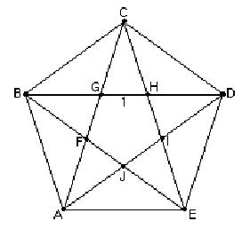

The Golden Triangle (36°, 72°, 72°) & Spiral/Chapter 7

Start with the pentagon ABCDE and flip it horizontally to get the pentagon below.
Then extend two sides and a diagonal of the pentagon to make the big golden triangle.
Notice that the centers of the arcs are always at the vertex of a 108o angle.
See Cristobal Vila's beautiful short movie "Nature by Numbers" at http://www.etereaestudios.com/docs_html/nbyn_htm/intro.htm
See Xah Lee's site on curves- especially the equiangular spiral
See Lori and Don's Nautilus shell applet which shows the growth of the spiral shell from 1 to 3.2 in 360o and the constant angle of 79.5o between the tangent to the curve and the radius.
See also Golden Triangle, Pentagon, Sunflower head and Powers of Phi, on the MAP
Geoffrey graphs the ratios of the Fibonacci numbers and writes a program to get the infinite sequence which has a limit.
Tara writes a story "A Quest For The Sacred Golden Pineapple, Pine Cone and Artichoke"
Jamie an 8th grader, solved the quadratic equation x2 - x - 1 = 0, by iteration, and he and Don wrote a program to do this on a TI-84 Plus.
Comparing the spirals of fibonacci numbers, the Nautilus shell, and The equal-tempered Musical scale
See also Dr. Ron Knott's great webite for much more on the Fibonacci numbers.